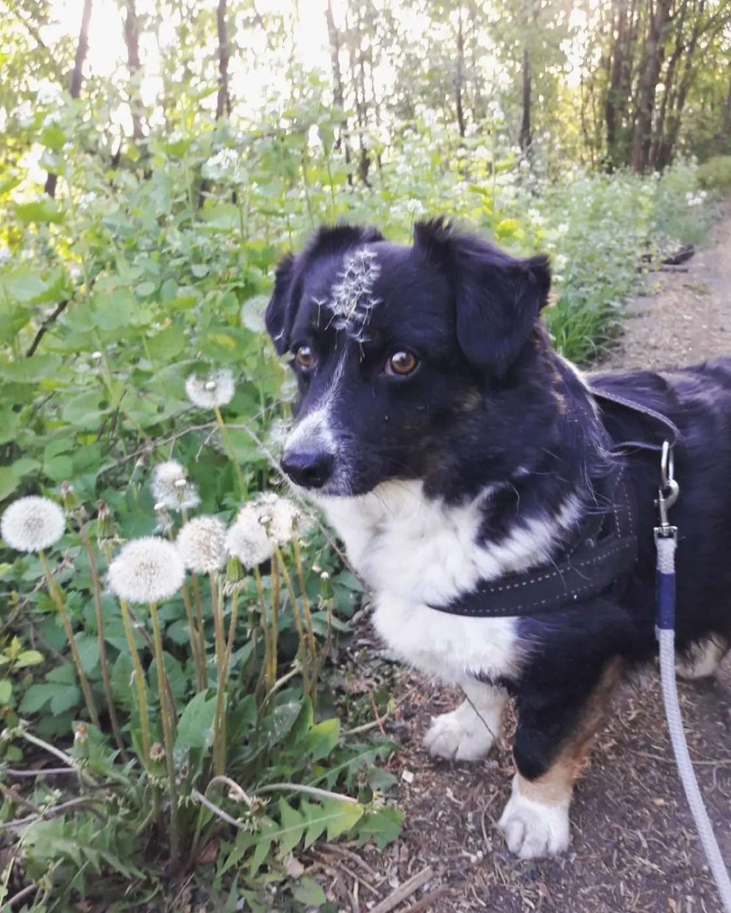

Bogen 00Schnittmuster für ein Lieblingsstück
Flora & Grete Handgemachte Einzelstücke
67305 Ramsen, Pfalz49,54° N 8,01° O
Röcke und Kleider aus Leinen, Musselin und echten Vintage-Stoffen, auf deine Taille und deine Wunschlänge genäht. Von mir, Cathrin, in meinem kleinen Atelier in der Pfalz.
 Länge ca. 68 cm
Taille nach Maß
1Zierknopfleiste
2Baumwoll-Musselin
Länge ca. 68 cm
Taille nach Maß
1Zierknopfleiste
2Baumwoll-Musselin
- Schneiderin
- Cathrin
- Atelier
- Ramsen, Pfalz
- Zuschnitt
- auf deine Maße
- Versand
- in Graskarton
01Kollektion
Gerade auf meinem Zuschneidetisch
Eine kleine Auswahl, die ich dir besonders ans Herz lege. Jedes Teil ist ein Schnittteil auf dem Bogen: mit Stoff, Zuschnitt und den Maßen, die du wissen solltest.
02Stückliste
Alle Teile im Überblick
Vierzehn Teile, alle von Hand genäht. Tipp auf eine Zeile, dann siehst du alle Fotos, Farben und Details.
| Teil | Foto | Bezeichnung | Stoff | Merkmale | Preis |
|---|
03Datenblatt · Über mich
Hi, ich bin Cathrin.


04Stimmen
Was andere über ihre Stücke schreiben
Ein paar liebe Worte aus meinen Etsy-Bewertungen. Ich freue mich über jede einzelne.
05Termine & Aktuelles
Wo du mich triffst
Nächste Termine
Aktuelles & Links
06Maße nehmen
So misst du dich für einen Rock nach Maß
Für Lene, Millie und Rosemary brauche ich nur zwei Zahlen von dir. Nimm dir ein Maßband und fünf Minuten, ich zeige dir wie.
07Anprobe
Komm zur Anprobe ins Atelier
08Atelier & Kontakt
Mein Atelier in Ramsen
Lageplan · 49,5367° N 8,0138° O
67305 Ramsen, Pfalz
Zum Schutz deiner Daten lädt die Karte erst nach deinem Klick. Dabei überträgt dein Browser Daten an Google.
09Fragen & Antworten
Gut zu wissen
Was mich oft gefragt wird. Fehlt etwas? Schreib mir gern.